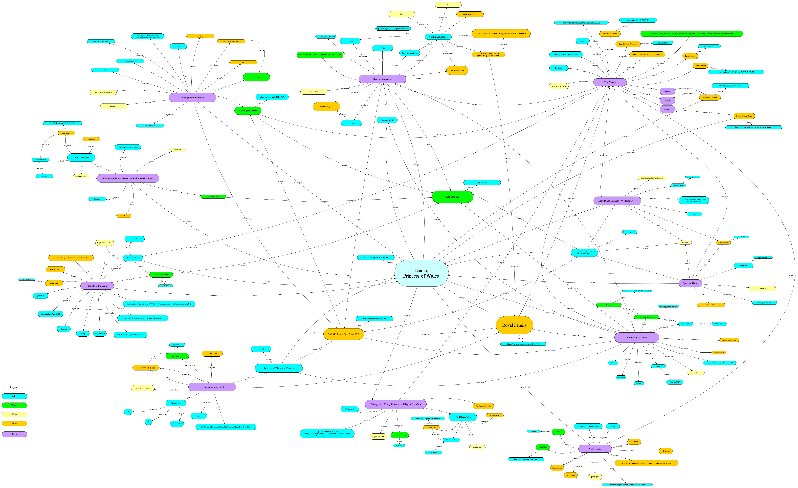

Timeline
Exploring Diana's life through key events.
The interactive timeline weaves together Diana's remarkable life story with the featured objects, presenting them in chronological order. While this timeline extends beyond the core assignment requirements, we believe it significantly enhances user engagement and deepens understanding of Diana's legacy.
To provide essential context, we incorporated key life events—her birth, wedding, and funeral—alongside the featured objects. This approach helps visitors navigate through different periods of her life while maintaining chronological clarity.
The timeline is powered by Timeline.JS, a free visualization tool developed by Northwestern University's Knight Lab. For detailed information about the timeline's creation and functionality, please visit the Timeline.JS website.
Items
Exploring Diana's life through the objects that tell her story.
The 10 distinctive objects selected for this narrative represent a broad spectrum of media types, incorporating textual materials, architectural structures, musical works, and additional cultural artifacts that collectively illuminate different aspects of Diana's life.
The selection of items was done considering their relevance on her life and legacy in relation to other individuals, places and time.
These items serve as the foundation for our knowledge models and data creation. By clicking on any image below, you can access an enlarged view of the resource and follow external links to both the original source website and a downloadable CSV file containing the complete raw metadata for each item.
All images and visual materials used in this project are either copyright-free, sourced from public domain collections, or used under Creative Commons licensing agreements, ensuring full compliance with intellectual property rights.


Knowledge Organization
Metadata Analysis
We identified the metadata of our chosen items from the institutions holding them and the different metadata standards in which the institution decided to encode the objects. The table bellow explains the item, its type, the provider institution and the metadata standard. In the metadata standards column those marked with * represent those where the provider did not explicitly provide the used standard, therefore applied the prevalent standard of the item.
| Item | Object Type | Provider | Metadata Standard |
|---|---|---|---|
| Engagement interview | Video | ITN | Open Graph / Schema.org |
| Kensington Palace | Building | Historic England | Custom |
| Lady Diana Spencer's Wedding Dress | Wedding Dress | Historic Royal Palaces | Dublin Core/ CDWA CCO * |
| Spencer Tiara | Jewelry Tiara | Wikipedia | Dublin Core* |
| "Diana, her True Story - In her own words" | Book | OPAC SBN | MARC21 |
| Photograph of Diana Shaking hands with AIDS patients | Photo | Getty Images | IPTC/XMP* |
| Photograph of Lady Diana on holiday in Portofino | Photo | Getty Images | IPTC/XMP* |
| The Crown | TV Series | IMDB | Schema.org |
| Candle in the Wind | Song | MusicBrainz | MMD |
| Divorce announcement | News Article | New York Times | Schema.org |
| Alma Bridge | Building | Structurae.net | Schema.org* |
Theoretical model
After identify the data description of our chosen items from the institutions holding them. We described or items in natural language in a graphic model reusing the description from the institution holding the items adding relevant information and interlinking the relationships of the items itself to create the narrative our our study domain with the purpose of enriching the data with the layer of interpretation. To ensure the unique identification of our entities, we aligned them with authoritative files and well-established knowledge repositories on the Web. We used to link our data VIAF, GeoNames, the Getty vocabularies and Wikidata.
We created this theoretical model answering the questions: Who, Where When, What for each item.
Conceptual model
We developed our Conceptual Model, the formal representation of the Theoretical model. The subjects, concepts and relationships identified in the Theoretical Model, were refactored in the Conceptual Model using classes and properties taken from selected schemas, vocabularies, and ontologies.
Initially we relied primarily on schema.org for describing entities and object properties because it provided the most comprehensive coverage for describing events and the more abstract concepts. For domain-specific entities we incorporated terms from Dublin Core and Getty vocabularies.
We used CIDOC CRM, which allowed for a semantically rich and structured representation of cultural heritage processes. For object and datatype properties, we adopted terms from FOAF, Dublin Core, CIDOC CRM, and schema.org, depending on the level of semantic context required.
Both models are free to download using the button below. We used yEd to create these models and graffoo to style the conceptual model.
Knowledge Representation
Item description
We produced a table for each item (csv file) with the full description of the object by reusing the standard and creating relations and links to related items. The CSV files are available here:
Text conversion
XML/TEI
We employed XML/TEI encoding methodology to represent the textual structure of a selected excerpt from the opening chapter, "In Her Own Words,". The XML/TEI encoded document sample is accessible here:
Text conversion
XML to HTML
The XML document is henceforth transformed into a HTML document. The XSLT file is accessible through the download button and the visualization is shown here below.
Text conversion
XML/TEI to RDF
The XML/TEI document is transformed into a RDF document. The RDFs are made available in both a .ttl and python file and downloadable as a .zipfile through the button here below:
XML to HTML conversion (screenshot)
RDF Creation
We produced an RDF dataset of all our items. Download the python code and rdf file here:
@prefix crm: <http://www.cidoc-crm.org/cidoc-crm/> .
@prefix dbr: <http://dbpedia.org/resource/> .
@prefix dc: <http://purl.org/dc/elements/1.1/> .
@prefix dcmitype: <http://purl.org/dc/dcmitype/> .
@prefix dcterms: <http://purl.org/dc/terms/> .
@prefix foaf: <http://xmlns.com/foaf/0.1/> .
@prefix lod: <https://github.com/digitalctrlv/LifeOfDiana/> .
@prefix owl: <http://www.w3.org/2002/07/owl#> .
@prefix rdfs: <http://www.w3.org/2000/01/rdf-schema#> .
@prefix schema: <https://schema.org/> .
@prefix wd: <https://www.wikidata.org/wiki/> .
@prefix xsd: <http://www.w3.org/2001/XMLSchema#> .
crm:E8 crm:P22 lod:RoyalFamily ;
crm:P23 dbr:Daniel_Finch ;
crm:P24 lod:NottinghamHouse .
lod:DivorceAnnouncement a schema:NewsArticle ;
dc:language "en"^^xsd:language ;
dc:subject lod:Divorce ;
dc:title "It's Official: Charles and Diana Split, and She Pays Her Own Bills" ;
schema:articleSection "A" ;
schema:copyrightHolder dbr:The_New_York_Times ;
schema:creator dbr:Sarah_Lyall ;
schema:isPartOf "CXLV, 50534" ;
schema:locationCreated <http://vocab.getty.edu/page/tgn/7007567> ;
schema:pagination 9 ;
schema:publishDate "1996-08-29"^^xsd:date ;
schema:publisher dbr:The_New_York_Times .
lod:EngagementInterview a dcmitype:MovingImage ;
dc:language "en"^^xsd:language ;
dc:title "On This Day: Charles and Diana's Awkward Engagement Interview, 1981" ;
crm:P14 lod:Charles,
lod:LadyDiana ;
schema:copyrightHolder "ITN archive" ;
schema:creator dbr:BBC ;
schema:dateCreated "1981-02-24"^^xsd:date ;
schema:genre "Entertainment" ;
schema:identifier "I0__QzksN8w" ;
schema:locationCreated lod:BuckinghamPalace ;
schema:provider dbr:YouTube ;
schema:publisher <http://www.youtube.com/@royalchannel, The Royal Family Channel"> ;
schema:uploadDate "2022-02-24"^^xsd:date .
lod:LadyDianaWithAIDSPatient a schema:Photograph ;
dc:subject "Princess Diana and Aids Patients " ;
dc:title "Princess Diana shaking hands with an AIDS patient" ;
foaf:depicts lod:LadyDiana ;
schema:copyrightHolder "WireImage" ;
schema:creator "Anwar Hussein" ;
schema:dateCreated "1987-08-09"^^xsd:date ;
schema:identifier 14653447 ;
schema:locationCreated dbr:Middlesex_Hospital ;
schema:provider <http://viaf.org/viaf/151544970> ;
schema:uploadDate "2007-08-22"^^xsd:date .
lod:TheCrown a schema:TVSeries ;
dc:language "en"^^xsd:language ;
dc:title "The Crown" ;
owl:sameAs <https://viaf.org/en/viaf/3838148997596659870003> ;
foaf:depicts lod:AlmaBridge,
lod:BuckinghamPalace,
lod:Charles,
lod:DianaHerTrueStory,
lod:KensingtonPalace,
lod:LadyDFuneral,
lod:LadyDiana,
lod:LadyDianaOnHolidayInPortofino,
lod:NottinghamHouse,
lod:RoyalFamily,
lod:RoyalWedding,
lod:Tiara,
lod:WeddingDress ;
schema:actor lod:ElizabethDebicki,
lod:EmmaLouiseCorrin ;
schema:creator lod:PeterMorgan ;
schema:genre "Biographical, Drama, Historical" ;
schema:locationCreated "Ardverikie Estate, Kinloch Laggan, Newtonmore, Highland, Scotland, UK
(Balmoral Castle in Scotland)" ;
schema:producer lod:LeftBankPictures,
lod:SonyPictureTelevision,
"Sony Pictures Television Production UK" ;
schema:provider <https://viaf.org/en/viaf/110144647635343459670> ;
schema:uploadDate "2016-11-05"^^xsd:date .
dbr:Christopher_Wren foaf:name "Chrisopher Wren" .
dbr:Sarah_Lyall foaf:name "Sarah Lyall" .
dcmitype:StillImage rdfs:subClassOf schema:Image .
<http://vocab.getty.edu/aat/300007838> rdfs:subClassOf <http://vocab.getty.edu/page/aat/300264550> .
<http://vocab.getty.edu/aat/300046046> rdfs:subClassOf <http://vocab.getty.edu/page/aat/300209261> .
<http://vocab.getty.edu/aat/300255177> rdfs:subClassOf <http://vocab.getty.edu/page/aat/300209261> .
<http://vocab.getty.edu/page/aat/300005743> rdfs:subClassOf <http://vocab.getty.edu/page/aat/300264550> .
lod:AndrewMorton owl:sameAs <http://viaf.org/viaf/22238479> ;
foaf:name "Andrew Morton" .
lod:Archiginnasio owl:sameAs dbr:Archiginnasio_of_Bologna ;
schema:location <http://viaf.org/viaf/5185150647115410860003> .
lod:CandleInTheWind a schema:MusicComposition ;
dc:language "en"^^xsd:language ;
dc:title "Candle in the Wind ’97 (live, 1997-09-06: Westminster Abbey, London, England, UK)" ;
owl:sameAs wd:Q2449307 ;
schema:about lod:LadyDiana ;
schema:contributor lod:BernieTaupin ;
schema:creator lod:EltonJohn ;
schema:dateCreated "1997-09-06"^^xsd:date ;
schema:duration "4:03" ;
schema:genre dbr:Ballad,
dbr:Classic_rock,
dbr:Pop,
dbr:Rock_music,
"Singer-songwriter" ;
schema:identifier "T-011.520.443-7, T-070.028.244-5" ;
schema:isBasedOn "Candle in the Wind" ;
schema:locationCreated <http://vocab.getty.edu/page/tgn/1100068> ;
schema:lyricist lod:BernieTaupin ;
schema:publisher lod:songPublisher .
lod:DianaHerTrueStory a schema:Book ;
dc:language "en"^^xsd:language ;
dc:subject lod:Charles,
lod:Divorce,
lod:LadyDiana,
lod:RoyalFamily ;
dc:title "Diana: Her True Story - In her Own Words" ;
schema:creator lod:AndrewMorton ;
schema:datePublished "1997"^^xsd:gYear ;
schema:genre "Biography" ;
schema:identifier "97818547927091854792709" ;
schema:mentions lod:Apartments,
lod:KensingtonPalace ;
schema:publisher "Michael O'Mara Books" ;
schema:sourceOrganization lod:Archiginnasio .
lod:ElizabethDebicki owl:sameAs <http://viaf.org/viaf/305280245> ;
foaf:name "Elizabeth Debicki" ;
schema:roleName lod:LadyDiana .
lod:EltonJohn owl:sameAs <http://viaf.org/viaf/84034533> ;
foaf:name "Elton John" .
lod:EmmaLouiseCorrin owl:sameAs <http://viaf.org/viaf/1883161881819434100005> ;
foaf:name "Emma-Louise Corrin" ;
schema:roleName lod:LadyDiana .
lod:LadyDFuneral a schema:Event ;
schema:location <http://vocab.getty.edu/page/tgn/1100068> ;
schema:workPerformed lod:CandleInTheWind .
lod:LadyDianaOnHolidayInPortofino a schema:Photograph ;
dc:subject "Lady Diana, Princess of Wales, sitting on the diving board of Mohammed Al Fayed's private yacht
'Jonikal' as a seagull flies overhead" ;
dc:title "Lady Diana on holiday in Portofino" ;
foaf:depicts lod:LadyDiana ;
schema:copyrightHolder "Sygma Premium" ;
schema:creator "Stephane Cardinale - Corbis" ;
schema:dateCreated "1997-08-24"^^xsd:date ;
schema:identifier "news-31717-003.jpg" ;
schema:locationCreated wd:Q232782 ;
schema:provider <http://viaf.org/viaf/151544970> ;
schema:uploadDate "2016-08-24"^^xsd:date .
lod:LeftBankPictures owl:sameAs <http://viaf.org/viaf/130591214> ;
foaf:name "Left Bank Pictures" .
lod:PeterMorgan owl:sameAs wd:Q948122 ;
foaf:name "Peter Morgan" .
lod:RoyalWedding a schema:Event ;
dc:date "1981-07-29"^^xsd:date ;
crm:P14 lod:Charles,
lod:LadyDiana ;
crm:P16 lod:Tiara,
lod:WeddingDress ;
schema:location <http://vocab.getty.edu/tgn/7011781> .
lod:SonyPictureTelevision owl:sameAs wd:Q652390 ;
foaf:name "Sony Pictures Television" .
lod:songPublisher owl:sameAs wd:Q57818158 ;
foaf:name "Universal–Songs of PolyGram International, Inc." .
schema:Book rdfs:subClassOf schema:Text .
schema:MusicComposition rdfs:subClassOf schema:CreativeWork .
schema:NewsArticle rdfs:subClassOf schema:Text .
schema:TVSeries rdfs:subClassOf dcmitype:MovingImage .
dbr:The_New_York_Times foaf:name "The New York Times" ;
schema:location <http://vocab.getty.edu/page/tgn/7007567> .
dcmitype:MovingImage rdfs:subClassOf schema:Image .
<http://vocab.getty.edu/page/aat/300209261> rdfs:subClassOf schema:CreativeWork .
<http://vocab.getty.edu/page/aat/300264550> rdfs:subClassOf schema:CreativeWork .
lod:AlmaBridge a <http://vocab.getty.edu/aat/300007838> ;
dc:title "Alma Bridge" ;
schema:copyrightHolder "Minister of Equipment, Transport, Housing, Tourism, and the Sea" ;
schema:creator "Auguste Arsac, M. Dougnac","J. F. Coste, Ch. Blanc" ;
schema:endDate "1974"^^xsd:gYear ;
schema:geoCrosses <http://viaf.org/viaf/316432461> ;
schema:location wd:Q90 ;
schema:material "Steel bridge" ;
schema:startDate "1970"^^xsd:gYear .
lod:Apartments schema:isPartOf lod:KensingtonPalace .
lod:BernieTaupin owl:sameAs dbr:Bernie_Taupin ;
foaf:name "Bernie Taupin" .
lod:BuckinghamPalace owl:sameAs <https://viaf.org/en/viaf/135411769> .
lod:Divorce a schema:Event ;
crm:P14 lod:Charles,
lod:LadyDiana .
lod:SpencerFamily owl:sameAs dbr:Spencer_family .
schema:Image rdfs:subClassOf schema:CreativeWork .
schema:Photograph rdfs:subClassOf dcmitype:StillImage .
schema:Text rdfs:subClassOf schema:CreativeWork .
lod:NottinghamHouse schema:creationDate "1605"^^xsd:gYear ;
schema:creator "Sir George Coppin" .
lod:Tiara a <http://vocab.getty.edu/aat/300046046> ;
dc:relation lod:WeddingDress ;
dc:title "Spencer Tiara" ;
schema:copyrightHolder lod:SpencerFamily ;
schema:creator "Garrard & Co" ;
schema:dateCreated "1937"^^xsd:gYear ;
schema:location "Spencer Family Collection" ;
schema:material "Silver, gold, diamonds" .
lod:WeddingDress a <http://vocab.getty.edu/aat/300255177> ;
dc:relation lod:Tiara ;
dc:title "Lady Diana Spencer's Wedding Dress" ;
schema:color "Ivory" ;
schema:copyrightHolder lod:SpencerFamily,
"David Emanuel, Elizabeth Emanuel" ;
schema:creator "David Emanuel, Elizabeth Emanuel" ;
schema:location "Spencer Family Collection" ;
schema:material "Ivory silk taffeta, antique lace, pearls, sequins" .
lod:RoyalFamily owl:sameAs dbr:British_royal_family ;
schema:owns lod:KensingtonPalace .
lod:Charles owl:sameAs <http://viaf.org/viaf/84034215> ;
schema:memberOf lod:RoyalFamily ;
schema:owns lod:KensingtonPalace .
lod:KensingtonPalace owl:sameAs <http://vocab.getty.edu/page/aat/300005743> ;
dc:title "Kensington Palace" ;
dcterms:replaces lod:NottinghamHouse ;
owl:sameAs <https://viaf.org/en/viaf/172644537> ;
schema:address "KENSINGTON PALACE, KENSINGTON PALACE W8" ;
schema:creator dbr:Christopher_Wren ;
schema:genre <http://vocab.getty.edu/page/aat/300107014> ;
schema:identifier 1223861 ;
schema:material "Stone" ;
schema:publishDate "1969-04-15" ;
schema:sourceOrganization dbr:Historic_England .
lod:LadyDiana owl:sameAs <http://viaf.org/viaf/107032638> ;
schema:deathPlace lod:AlmaBridge ;
schema:homeLocation lod:Apartments .
URI entities
We established URIs for our chosen entities and items, along with supplementary resources that could enhance the network of internal relationships:
- https://github.com/digitalctrlv/LifeOfDiana/EngagementInterview
- https://github.com/digitalctrlv/LifeOfDiana/Tiara
- https://github.com/digitalctrlv/LifeOfDiana/WeddingDress
- https://github.com/digitalctrlv/LifeOfDiana/KensingtonPalace
- https://github.com/digitalctrlv/LifeOfDiana/LadyDianaWithAIDSPatient
- https://github.com/digitalctrlv/LifeOfDiana/DianaHerTrueStory
- https://github.com/digitalctrlv/LifeOfDiana/DivorceAnnouncement
- https://github.com/digitalctrlv/LifeOfDiana/LadyDianaOnHolidayInPortofino
- https://github.com/digitalctrlv/LifeOfDiana/AlmaBridge
- https://github.com/digitalctrlv/LifeOfDiana/CandleInTheWind
- https://github.com/digitalctrlv/LifeOfDiana/TheCrown
This is text of another group -- In addition, so as to uniquely identify our entities, we tried to align them to external resources such as authority files and repositories of knowledge already present on the World Wide Web. In particular, we connected our data to VIAF, Geonames, Getty AAT, Library of Congress Linked Data Service and Wikidata.
To create such external connections we exploited some properties able to create semantic associations, namely: owl:sameAs, skos:exactMatch, skos:broader, skos:related, foaf:isPrimaryTopicOf, and rdfs:seeAlso.